Bank import plugin - Petty cash transactions (Import - CSV)
Introduction to Petty Cash
Receipt and Payment batch journal – Bank accounts
The use of cheques or electronic transfers (banking transactions) should be used for all transactions. The handling of cash should be limited as far as possible. Any amounts received from debtors (customers / clients) for cash sales or payments on accounts, should be banked as soon as possible.
These cash received by a business, should not be used for purchases, etc.
Cash, if not controlled and safeguarded properly, will create a climate for theft and fraud.
Any cash and payments received should be deposited in the bank account of the business. In osFinancials the receipts should be recorded in the Receipts batch (journal).
Any payments made should be paid out of the bank account of the business. In osFinancials the payments should be recorded in the Payments batch (journal).
Receipt and Payment batches - Petty Cash
A business may need to pay cash for smaller items and items needed urgently. For this reason, a business may need to keep a certain amount of cash (petty cash float) on hand to pay for these smaller necessary or urgent purchases.
Petty cash is a minimum amount of cash kept on hand for small purchases or reimbursements.
Petty cash money and payments or reimbursements must be safeguarded and properly documented to ensure that theft and fraud do not happen.
Petty cash payments (reimbursements) may be handled in the following:
- Employees may be required to fill in a form (e.g. Petty cash voucher) to receive the cash from the petty cash. Directly after the purchase, the employee must submit a receipt or acceptable supporting documentation as proof of the purchase and return any change if applicable.
- Employees may be asked to make purchases themselves and then get reimbursed from the fund after submitting a receipts and/or acceptable supporting documentation as proof of the purchase.
The Petty cash receipts batch is hardly ever used. Any Petty cash float and/or replenishment is recorded in the Payment batch of the bank account from which the Petty cash float is recorded.
All petty cash payments or reimbursements is recorded in the Petty Cash Payments batch.
Petty cash guidelines
Some guidelines for using Petty cash, is as follows:
- Appointing a Petty cashier – Only one person may have assess to the Petty cash. The petty cash cashier, must make sure that nobody else has access to the cash.
- The petty cashier should be responsible for any cash shortages or a lack of receipts and/or acceptable supporting documentation as proof of the purchase.
- Calculating the amount of float – The petty cash float should not have large amounts. It should be calculated for the average petty cash expenses for a period, monthly, fortnightly or weekly according to the needs of the business.
- Another person needs to be appointed to check, on a regular basis, in the presence of the petty cashier, that the petty cash is correct.
- Clear guidelines or policies and limits:
- Purchases or reimbursements from the Petty cash should only be allowed for valid business expenses (not anything else which are regarded as private expenses).
- Receipts and/or acceptable supporting documentation as proof of the purchase or reimbursement must be submitted.
- Restrict the Petty cash payments or reimbursements to specific employees.
- Implement a clear list of allowed purchases or reimbursements.
- Limit the amount for which purchases reimbursed.
- Make the petty cash guidelines and policies available to all employees.
- If Tax (VAT/GST/Sales tax ) is charged on a reimbursed purchase, the Tax should also be recorded as Input tax.
Petty cash can be recorded in in a pre-printed Petty cash register, or done in a spreadsheet. The spreadsheet can be used to record and control petty cash payments or reimbursements as well as to import the transactions as a Comma Separated Value (*.csv) – Tab delimited file into osFinancials.
Recording Petty Cash transactions
The following options are available to record petty cash transactions:
- Manually enter the transactions in a batch.
- Petty Cash Register - Import the Petty cash transactions from Comma Separated Value (*.csv) – Tab delimited file into batches. This is very useful for bringing in external data without having to recapture it. This allows us to easily develop add on systems in Spreadsheet format and to synch them with osFinancials.
Petty Cash Register
Depending on your requirements, the petty cash register may be designed for the necessary controls to keep accurate track cash in the petty cash and moneys paid for expenses / reimbursements.
The Petty Cash Register, in a spreadsheet format, can be used to implement the necessary controls and keep track of your expenses, payments and reimbursements. Transactions in the Petty Cash Register can be saved in a comma separated value (*.csv) -Tab delimited file format. These transactions can then be imported into a Petty Cash payments batch and updated to the ledger.
Delimited file import
The CSV format has been around for many years as a means of transferring data between datasets.
osFinancials can import CSV files into batches. This is very useful for bringing in external data without having to recapture it. This allows us to easily develop add on systems in Spreadsheet format and to synch them with osFinancials.
OpenOffice 4 / LibreOffice 5
There are a number of contenders for the Office Software Market, Microsoft Office, OpenOffice LibreOffice. I have found OpenOffice to be the best at handling CSV files. You can use their packages, but I sincerely recommend you take advantage of the FREE Download of Open Office at www.openoffice.org and use OpenOffice for working with the data you are going to import into osFinancials.
LibreOffice can be downloaded at http://www.libreoffice.org/
Get the Data Ready in OpenOffice / LibreOffice
osFinancials is particular about the CSV format that it will accept. osFinancials accepts the Tab delimited csv files.
|
|
If the CSV file is not EXACTLY the format that osFinancials accepts it will generate an error: “List index out of bounds (3)”. |

|
|
If the Date is not entered as “31/03/2016”, and is entered as “2016/03/31”, depending on your system settings, and the delimited file import in osFinancials is imported, the dates may be imported as 1899/12/31. Irrespective of your operating system’s date and regional settings, if the date is entered as “31/03/2016” the date should be, by default, be imported correctly according to the format of your operating system’s date and regional settings. |
Petty Cash Register Template
Open the Petty Cash Register Template
Open the PETTYCASHTEMPLATE.ods (Open Document Spreadsheet).
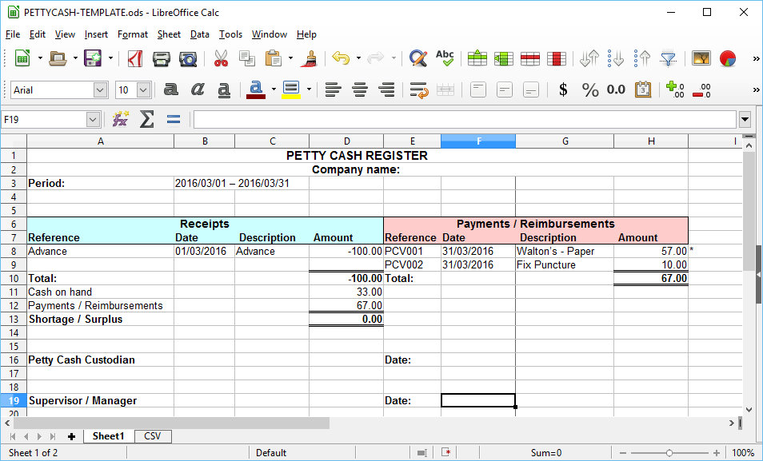
Enter the name of your business and the period.
The default sheet (Sheet1), consists of Receipts and Payments / Reimbursements:
- Receipts – Column A – D - The Petty cash advances and replenishment as well as any shortages refunded should be entered in these columns. The transactions for the Petty Cash advances and replenishments, does not need to be recorded in TurboCASH, since these will be recorded in the Payments batch of the Bank account from which the petty cash float amount is paid.
- Payments / Reimbursements – Column E – H – All payments or reimbursements must be entered in these columns. These transactions must be recorded in the Petty Cash batch (journal). These transactions will be updated in the CSV sheet. Once the transactions is added, the CSV sheet, may be saved as a comma separated value – Tab delimited file type. The transactions may then be imported into TurboCASH as a delimited file import.
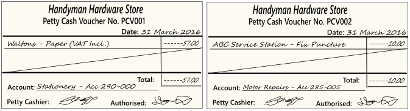
To add more transactions, you may select a row, e.g. Row 9, and insert the required rows.
Balancing the Petty Cash
Petty cash funds must be periodically checked to ensure that the balance of the petty cash fund is correct.
The petty cash float must always be in balance with the cash on hand plus the receipt or acceptable supporting documentation as proof of the purchase.
|
|
If it does not balance and you have checked that you have counted the cash at hand correctly, and that the petty cash payment transactions are entered correctly. If it is correctly counted and entered, a difference indicates a surplus or a shortage:
|
Updating the CSV sheet to a Tab delimited file
Once the transactions is added in Sheet1, click on the CSV sheet.
To add more transactions in the CSV sheet, as added in Sheet1, copy the formulas in Columns A – H to the next rows.
This will update the CSV sheet with the transactions as entered in the Payments / Reimbursements – Column E – H of Sheet1.
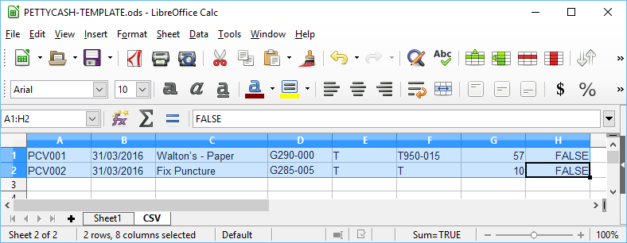
The values of the columns is as follows:
- Column A – Reference =Sheet1.E8 Reference as entered in column E Row 8 of Sheet1.
- Column B – Date =Sheet1.F8 the Date as entered in column F Row 8 of Sheet1.
|
|
If the Date is not entered as “31/03/2016”, and is entered as “2016/03/31”, depending on your system settings, and the delimited file import in TurboCASH is imported, the dates may be imported as 1899/12/31. Irrespective of your operating system’s date and regional settings, if the date is entered as “31/03/2016” the date should be, by default, be imported correctly according to the format of your operating system’s date and regional settings. |
- Column C – Description =Sheet1.G8 the Description as entered in column G Row 8 of Sheet1.
- Column D – Account = The default expense / purchase account which will be imported into the batch.
|
|
You may enter an existing default account, e.g. “G999-000” – Suspense account or a “Petty cash control” account (added in Accounts (Default ribbon)). Once the csv file (Delimited file import) of the petty cash transactions in batch is imported, you need to select the correct account for each transaction. |

|
|
You need to type the account type prefix e.g. “G” followed by the main account code e.g. “290” and the sub-account, separated by a hyphen “-” for example, “G290-000” for the Printing, Postage and Stationery account. Income and expense accounts (starting with the “G” prefix for General ledger accounts) are prefixed with an “*” (asterisk). If the “*” asterisk is also entered in this column, the account will not be imported into the delimited file batch. |

|
|
You may type the correct account in this column from the printed Chart of accounts from Reports → Ledger → Listing (Reports ribbon), e.g. “G290-000” – Printing, Postage and Stationery account. Once the csv file (Delimited file import) of the petty cash transactions in batch is imported, you can check and confirm the correct account for each transaction. |
- Column E – Contra account – The default value is “T”. Do not delete this column and leave the value as “T”.
- Column F – Tax account – The default value is “T”. Leave the value as “T”, unless Tax (VAT/GST/Sales tax) is applicable to the transaction.
|
|
You may leave the default as “T”. Once the csv file (Delimited file import) of the petty cash transactions in the petty cash batch is imported, you need to select the correct tax account for each transaction on which Tax (VAT/GST/Sales tax) is applicable. |
|
|
If Tax (VAT/GST/Sales tax) is applicable to the transaction, you may type the account type prefix e.g. “T” followed by the main account code e.g. “950” and the sub-account, separated by a hyphen “-” for example, “T950-015” for the Input VAT – Standard rate – 14% account. |
- Column G – Amount – =VALUE(Sheet1.H8) – The amount of the transaction (expense / payment / reimbursement).
|
|
The amount should be a positive amount, since the transactions need to be imported as a debit transaction into the Petty cash batch (journal). If the amount is negative (prefixed by a minus “-” sign) amount, it will be imported as a credit amount into imported into the delimited file batch. |
- Column H – The default value is “FALSE”. Once the transactions is imported, and you select an account (i.e. Debtor (customer/client), Creditor (supplier/vendor) and/or a Ledger account), which is set as Open item account and the account has processed transactions to be linked, the “Open item selection” screen will be displayed.
Save the CSV sheet to a Tab delimited file
Once the transactions is updated in the CSV sheet, the CSV sheet, need to be saved as a comma separated value – Tab delimited file type. The transactions may then be imported into osFinancials as a delimited file import.
|
|
Before proceeding with the next step, remember to SAVE the PETTYCASHTEMPLATE.ods (Open Document Spreadsheet). |
To save the Transactions in the CSV tab to a Tab delimited file:
- On the “PETTYCASHTEMPLATE.ods” (Open Document Spreadsheet), click on the CSV sheet, if not already selected.
- Select the rows and columns on the CSV sheet.
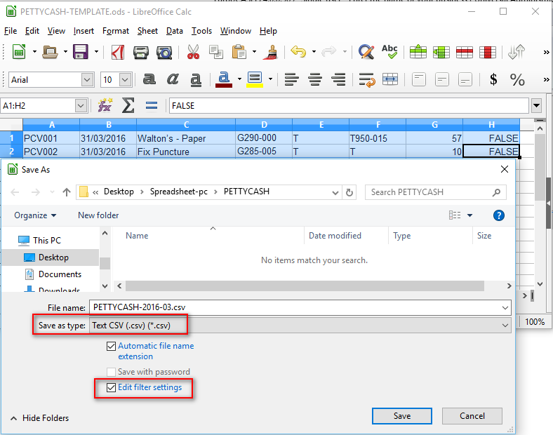
- Enter the name for the Batch file, (e.g. “PettyCASH-2016-03”. In this example, it will indicate the petty cash transactions for “March 2016”.
- Save as type: - Select the “Text CSV (.csv) (*.csv)” as the file type. The “Edit filter settings” field (tick box) will be activated for the “Text CSV (.csv)” file type.
|
|
It is important to select (tick) the “Edit filter settings” field. This will launch the “Export Text file” screen on which the TAB field delimiter needs to be selected. |
- Edit filter settings – Tick this option.
- Click Save.
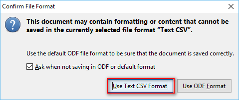
- On the “Confirm File Format” screen, click Use Text CSV Format button. The “Export Text File” screen is displayed:
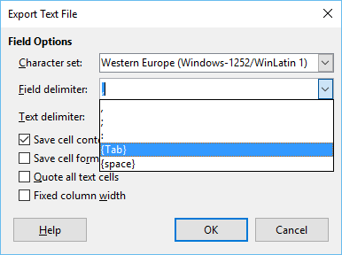
- Select the following options:
- Field delimiter: - Select {TAB}.
|
|
If this option is not selected, the delimited file import in osFinancials will fail. The Tab delimited CSV import file is required by osFinancials. |
- Save cell content as shown – Select (tick) this option. If this option is not selected (not ticked), formula values will be imported and may produce REF (Reference) errors.
- Click the OK button.
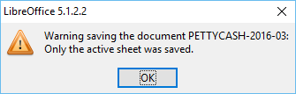
- Click the OK button.
- Close the “PettyCASH-2016-03.csv” file.
|
|
If the csv file is opened (active) on your system, the following error message will be displayed: “Cannot open file "...\Spreadsheets\PettyCASH\PettyCASH-2016-03.csv". The process cannot access the file because it is being used by another process.”. Close the file in which it is open, e.g. Excel / OpenOffice / LibreOffice and import the file again. |
Delimited File Import - CSV file into osFinancials
Once the transactions is saved as a comma separated value – Tab delimited file type, the petty cash transactions can be imported into osFinancials as a delimited file import.
To Import Petty Cash Transactions from the CSV - Tab delimited file:
- On the Default ribbon, select Batch entry.
- Select the Payments batch to which the Petty Cash account is linked.
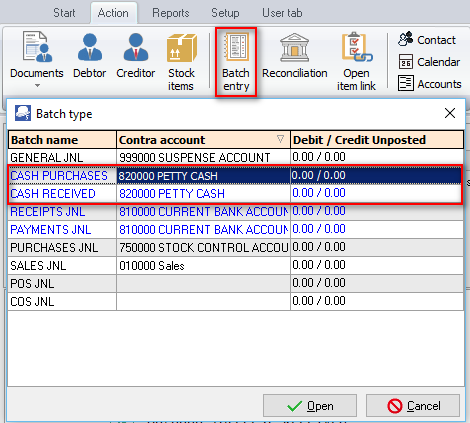
- Click on the Open button. The Batch entry transaction screen for the Payments batch to which the Petty Cash bank account is linked will be displayed.
- On the F10:Setup icon to check the settings for the batch.
|
|
On the Standard tab, check that the “Consolidate balancing” option, is not selected. If the “Consolidate balancing” option, is selected the following error message will be displayed: 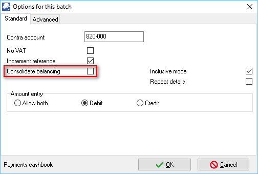 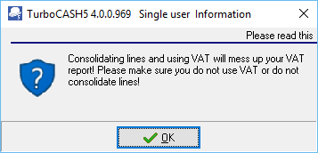 |
- Click on F9:Process icon and select the “Delimited file import” option and click OK.
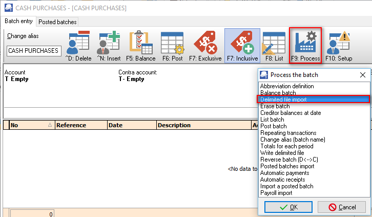
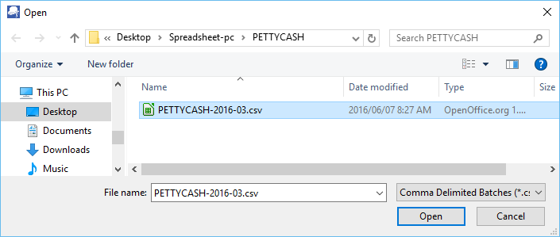
- Navigate and select the Petty cash batch file (e.g. “PETTYCASH-2016-03.csv”) to import and click Open.
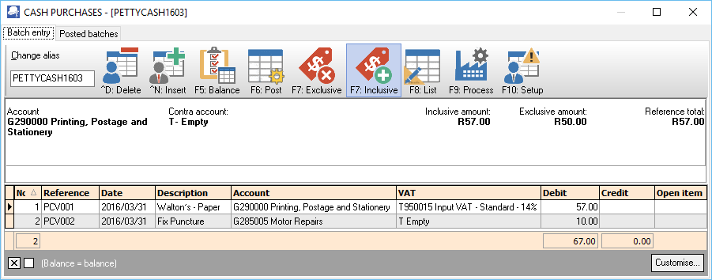
- Enter the Alias (batch name) in the “Change alias” field.
- After importing the petty cash transactions, you may need to change / edit the imported petty cash transactions:
- Reference – The Petty cash voucher or reference number as entered in Column E of Sheet1 and updated in Column A of the CSV sheet in the Petty Cash Register.
- Date – The date as entered in Column F of Sheet1 and updated in Column B of the CSV sheet in the Petty Cash Register.
|
|
If the Date (in Sheet1 of the Petty Cash Register) is not entered as “31/03/2016”, and is entered as “2016/03/31”, depending on your system settings, and the delimited file import in TurboCASH is imported, the dates may be imported as 1899/12/31. Irrespective of your operating system’s date and regional settings, if the date is entered as “31/03/2016” the date should be, by default, be imported correctly according to the format of your operating system’s date and regional settings. |
- Description – The descriptions as entered in Column G of Sheet1 and updated in Column C of the CSV sheet in the Petty Cash Register.
- Account – The account code as entered in Column D of the CSV sheet in the Petty Cash Register. Each payment or reimbursement transaction needs to be linked (allocated) to the correct account.
|
|
If you have entered an existing default account, e.g. “G999-000” – Suspense account or a “Petty cash control” account (added in Accounts (Default ribbon)). Once the csv file (Delimited file import) of the petty cash transactions in batch is imported, you need to select the correct account for each transaction. |
|
|
You need to type the account type prefix e.g. “G” followed by the main account code e.g. “290” and the sub-account, separated by a hyphen “-” for example, “G290-000” for the Printing, Postage and Stationery account. Income and expense accounts (starting with the “G” prefix for General ledger accounts) are prefixed with an “*” (asterisk). If the “*” asterisk is also entered in this column, the account will not be imported into the delimited file batch. |
|
|
You may type the correct account in this column from the printed Chart of accounts from Reports → Ledger → Listing (Reports ribbon), e.g. “G290-000” – Printing, Postage and Stationery account. Once the csv file (Delimited file import) of the petty cash transactions in batch is imported, you can check and confirm the correct account for each transaction. |
- Tax account – The correct tax account (code) must be selected, if Tax (VAT / GST / Sales tax) is applicable to the transaction. The Tax account code as entered in Column F of the CSV sheet in the Petty Cash Register.
|
|
The tax column will only be displayed if the “No Tax” option is left blank (not ticked) in the F10:Setup option in the Batch entry screen. If no Tax (VAT/GST/Sales Tax) is applicable to all the transactions in the Petty Cash Register; or if you are not registered for Tax (VAT/GST/Sales Tax) you may select to hide the tax column will only be displayed if the “No Tax” option is left blank (not ticked) in the F10:Setup option in the Batch entry screen. |

- Debit – Positive amounts – The amount of the transaction (expense / payment / reimbursement) as entered in Column H of Sheet1 and updated in Column G of the CSV sheet in the Petty Cash Register.
- Credit – Negative amounts –
|
|
The amount should be a positive amount, since the transactions need to be imported as a debit transaction into the Petty cash batch (journal). If the amount is negative (prefixed by a minus “-” sign) amount, it will be imported as a credit amount into imported into the delimited file batch. |
- Open item – If an account (i.e. Debtor (customer/client), Creditor (supplier/vendor) and/or a Ledger account), which is set as Open item account and the account has processed transactions to be linked, the “Open item selection” screen will be displayed. On this “Open item selection” screen, you may select to link a payment transaction to a credit transaction, ode a receipt (deposit) transaction to a debit transaction.
- Click on the F5:Balance icon. This will generate balancing transactions to the Petty cash bank account. 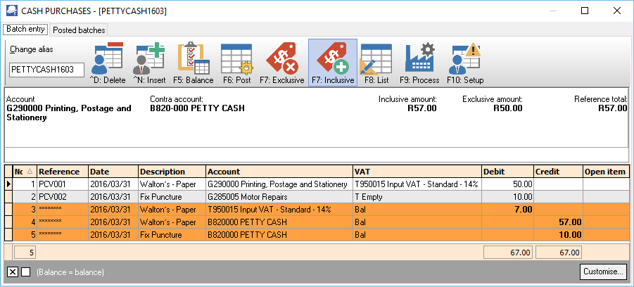
- Click on the F8:List icon to print a list of the transactions in the unposted batch.